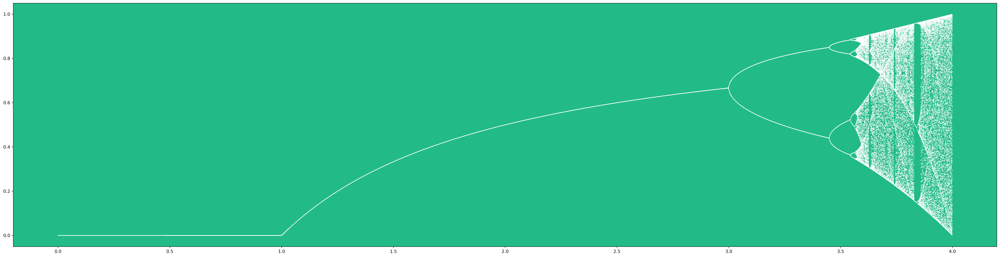

./chaos/readme.txt
here is a python program that graphs an iterative quadratic function
at certain inputs, the iteration is predictable, at others it is chaotic.
it is somewhat unusual to produce chaos in math, so it is a cherished functioin for this reason.
./chaos/chaos.py
from matplotlib import pyplot as plt
import numpy as np
plt.rcParams['axes.facecolor'] = '#22bb88'
plt.rcParams['figure.figsize'] = 40,10
# x and y values to be plotted
a_values = []
outputs = []
def iterator(a, x):
global a_values, outputs
old = x
output_set = set()
# wait to stablize
for _ in range(1000):
new = a*old - a*old**2
old = new
# either cycle is found or goes into chaos
while new not in output_set\
and len(output_set) < 100:
output_set.add(new)
new = a*old - a*old**2
old = new
outputs.extend(list(output_set))
a_values.extend([a]*len(output_set))
# generate points for range of a values
STEP = 0.001
INITIAL_SEED = 0.5 # arbitrary starting pt 0<x<1
for a in np.arange(0, 4, STEP):
iterator(a, INITIAL_SEED)
title = 'test'
plt.scatter(a_values, outputs, color = 'white', s = 0.2)
plt.savefig(title + '.png', format='png', dpi = 300, bbox_inches = 'tight')
plt.show()